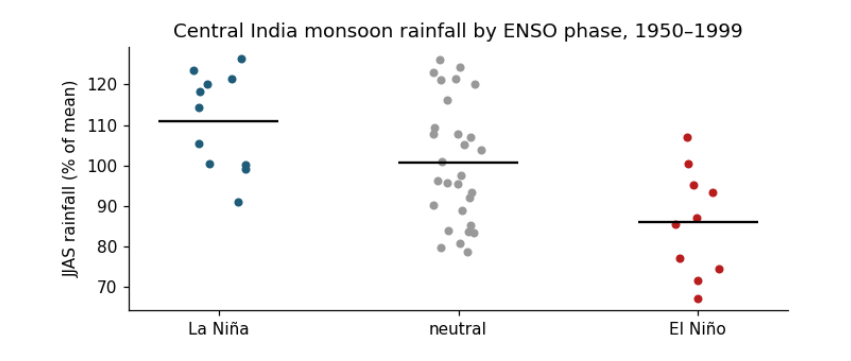
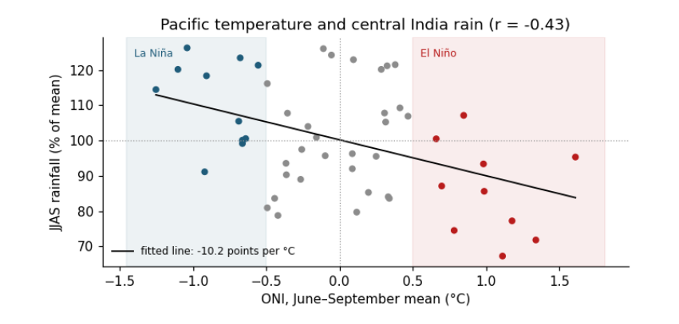

The whole guide on one page¶
1. The ideas behind every test¶
A hypothesis test answers one narrow question: if nothing special were going on, how surprising would these data be? Every test in this guide, from a coin toss to a flood map, follows the same six steps. Learn them once and every test becomes a variation.
1.1 The six steps¶
-
State the question in words: is this coin biased? Has June snow cover declined?
-
Write the null hypothesis \(H_0\), the “nothing special” case (the coin is fair; the trend is zero), and the alternative \(H_1\) (the coin is biased; the trend is not zero).
-
Choose a test statistic: one number that summarises how far the data are from what \(H_0\) predicts, such as a \(z\)-score, a \(t\)-value or a \(\chi^2\) value.
-
Find its sampling distribution under \(H_0\): the spread of values the statistic would take if \(H_0\) were true and the data were drawn again and again. Statistical theory gives it for standard tests; a simulation gives it for anything.
-
Compute the p-value: the probability, under \(H_0\), of a statistic at least as extreme as the one observed.
-
Report and interpret: the statistic, its degrees of freedom, the p-value, an effect size and a confidence interval, and what they mean for the question.
1.2 The quantities, and how to read them¶
| Quantity | What it is and how to read it |
|---|---|
| \(H_0\), \(H_1\) | The null and alternative hypotheses. A test can reject \(H_0\) or fail to reject it; it never proves \(H_0\). |
| \(\alpha\) | The significance level, chosen before looking: the chance of rejecting a true \(H_0\) that you accept. Usually 0.05. |
| p-value | Probability, if \(H_0\) were true, of data at least as extreme as observed. Small means surprising under \(H_0\). It is not the probability that \(H_0\) is true, and not the size of an effect. |
| \(z\) | Distance from a mean in standard deviations, \(z = (x-\mu)/\sigma\). Unitless. $ |
| \(t\) | An estimate divided by its standard error, for example \(t = b/\mathrm{SE}(b)\). Unitless. Read with its degrees of freedom; with few of them, a larger $ |
| \(\chi^2\) | Sum over cells of \((O-E)^2/E\), observed against expected counts. Unitless. Grows with sample size. |
| df | Degrees of freedom: independent pieces of information left after fitting. For a straight line through \(n\) points, \(n-2\). |
| SE | Standard error: how much an estimate would vary between repeated samples. Same units as the estimate. |
| CI | Confidence interval: a range that, in 95% of repeated samples, contains the true value. Same units as the estimate. More informative than a p-value. |
| Effect size | How big the difference or relation is, separately from how certain: Cohen’s \(d\) for means, \(r\) for correlation, Cramér’s \(V\) for tables. |
| Type I error | Rejecting a true \(H_0\) (a false alarm). Its rate is \(\alpha\). |
| Type II error | Failing to reject a false \(H_0\) (a miss). Power is one minus its rate: the chance of detecting a real effect. |
| One- or two-sided | Two-sided asks “different in either direction”; one-sided asks only one direction and must be chosen before seeing the data. |
1.3 Assumptions: where tests go wrong¶
Every test assumes something about the data, and climate data break one assumption more often than any other: independence. Today’s temperature resembles yesterday’s; one flooded field implies the next. Treated as independent, such data look far more informative than they are, and p-values come out too small. The guide shows the effect and two simple remedies: counting the effective number of independent years for a trend, and thinning a map before testing it. The other common assumptions are approximate normality (for \(z\) and \(t\)), equal spread in two groups (dropped by Welch’s test) and large enough expected counts (for \(\chi^2\), at least about five per cell). Rank-based tests (Mann–Whitney, Spearman, Mann–Kendall) drop normality.
1.4 Setup¶
This notebook runs every test in the guide on real data. Short examples come first, to build intuition with numbers small enough to check by hand; then each test is applied to a real question from climate, El Niño and the monsoon, snow cover, and radar flood mapping. Every printed number is explained: what goes in, what comes out, its units, and how to read it.
Libraries: numpy (arithmetic on arrays), pandas (tables), scipy.stats (the tests themselves) and matplotlib (figures). A fixed random seed makes the simulations repeat exactly.
import urllib.request
from pathlib import Path
import numpy as np
import pandas as pd
import matplotlib.pyplot as plt
from scipy import stats
rng = np.random.default_rng(42)
plt.rcParams.update({"figure.dpi": 110, "axes.spines.top": False, "axes.spines.right": False})
DATA = Path("data"); DATA.mkdir(exist_ok=True)
SOURCES = {
"hadcrut5.csv": "https://www.metoffice.gov.uk/hadobs/hadcrut5/data/HadCRUT.5.0.2.0/analysis/diagnostics/"
"HadCRUT.5.0.2.0.analysis.summary_series.global.annual.csv",
"oni.data": "https://psl.noaa.gov/data/correlation/oni.data",
"indiamon.data": "https://psl.noaa.gov/data/correlation/indiamon.data",
"nh_snow.txt": "https://climate.rutgers.edu/snowcover/files/moncov.nhland.txt",
# a small table made for this guide from the radar manual's Sentinel-1 export (see data_local/SOURCE.txt)
"sindh_sar_1km.csv": "https://raw.githubusercontent.com/AhmadAmmar/AhmadAmmar.github.io/main/guides/hypothesis-testing/notebooks/data_local/sindh_sar_1km.csv",
}
LOCAL = Path("data_local") # present when the notebook runs inside the guide's own folder
for name, url in SOURCES.items():
if not (DATA / name).exists() and (LOCAL / name).exists():
(DATA / name).write_bytes((LOCAL / name).read_bytes())
if not (DATA / name).exists():
req = urllib.request.Request(url, headers={"User-Agent": "hypothesis-notebook/1.0"})
(DATA / name).write_bytes(urllib.request.urlopen(req, timeout=120).read())
print(f"{name:14s} {(DATA / name).stat().st_size / 1e3:8.1f} kB")
def read_psl(path):
"""NOAA PSL index files: one row per year, twelve monthly values; -99.9 and -999.9 mean missing."""
rows = []
for line in Path(path).read_text().splitlines():
parts = line.split()
if len(parts) == 13 and parts[0].isdigit():
rows.append([int(parts[0])] + [float(v) for v in parts[1:]])
t = pd.DataFrame(rows, columns=["year", *range(1, 13)]).set_index("year")
return t.mask(t <= -99)
hadcrut5.csv 7.0 kB
oni.data 6.7 kB
indiamon.data 3.5 kB
nh_snow.txt 13.3 kB
sindh_sar_1km.csv 755.1 kB
1.5 A coin and a p-value¶
Thinking it through. What do we want to measure? Whether a coin favours heads. What kind of data? A count of successes out of a fixed number of independent tries. How do such data behave? With a fair coin the count follows the binomial distribution, centred on n/2 with a spread of √(n × 0.5 × 0.5) = 5 heads for 100 tosses. Which test, and why? The exact binomial test, because we know that distribution exactly; the z-test is its normal approximation, fine for large n. The chapter Calculating by hand works a 10-toss version line by line.
Every hypothesis test has the same shape. A null hypothesis (H₀) says "nothing special is going on". A test statistic summarises the data in one number. Under H₀ that number has a known spread of values, its sampling distribution. The p-value is the probability, if H₀ were true, of a statistic at least as extreme as the one observed. A small p means the data would be surprising if H₀ were true.
Short example: a coin gives 60 heads in 100 flips. H₀: the coin is fair, P(heads) = 0.5. Statistic: the number of heads. We find the p-value three ways: by simulating 100,000 fair coins, exactly from the binomial distribution, and with the normal approximation (a z-score).
heads, n = 60, 100
sims = rng.binomial(n, 0.5, size=100_000)
p_sim = np.mean(np.abs(sims - 50) >= abs(heads - 50)) # two-sided: as far from 50 in either direction
p_exact = stats.binomtest(heads, n, 0.5).pvalue
z = (heads - n * 0.5) / np.sqrt(n * 0.5 * 0.5) # (observed - expected) / standard deviation
p_z = 2 * stats.norm.sf(abs(z))
z_cc = (abs(heads - n * 0.5) - 0.5) / np.sqrt(n * 0.5 * 0.5) # continuity correction: counts are whole numbers
p_cc = 2 * stats.norm.sf(z_cc)
print(f"simulation p = {p_sim:.4f} exact binomial p = {p_exact:.4f}")
print(f"normal approximation: z = {z:.2f}, p = {p_z:.4f}; with continuity correction z = {z_cc:.2f}, p = {p_cc:.4f}")
fig, ax = plt.subplots(figsize=(7, 2.8))
ax.hist(sims, bins=np.arange(30, 71) - 0.5, color="#cbd5e1")
ax.hist(sims[np.abs(sims - 50) >= 10], bins=np.arange(30, 71) - 0.5, color="#b91c1c", label="as extreme as 60 or more")
ax.axvline(60, color="k", lw=1)
ax.set(xlabel="heads in 100 flips of a fair coin", ylabel="simulations", title="The sampling distribution under H₀")
ax.legend(frameon=False, fontsize=8); plt.tight_layout(); plt.show()
simulation p = 0.0571 exact binomial p = 0.0569
normal approximation: z = 2.00, p = 0.0455; with continuity correction z = 1.90, p = 0.0574

Reading it: the grey histogram is what a fair coin produces; the red tails are results at least as far from 50 as 60 is. Their share, about 0.057, is the p-value. With the usual threshold α = 0.05, 0.057 is just above it, so we would not reject H₀: 60 heads is a little unusual but not convincing evidence of a biased coin. The simulation and the exact binomial agree. The plain normal approximation gives 0.046, which would wrongly fall below 0.05: it treats the count of heads as continuous, while it can only be a whole number. The continuity correction subtracts half a count from the distance to the expected value, and brings the approximation back to 0.057. Approximations are convenient; when an exact test is available, use it, especially with small counts.
Two warnings that apply to every test below. A p-value is not the probability that H₀ is true, and a large p-value does not show H₀ is true; it only says the data are not surprising under H₀. And a tiny p-value says nothing about how big or important an effect is: for that we need an effect size and a confidence interval.
2. One value, and a trend¶
Two of the most common questions asked of climate data are whether a single value is unusual, and whether a series has a trend. The \(z\)-test answers the first when the spread is known. The \(t\)-test answers the second, and its degrees of freedom show why a trend from few, or dependent, years deserves caution.
2.1 The z-test: is one value unusual?¶
Thinking it through. What do we want to measure? How unusual one value is against a reference. What kind of data? One new measurement, and a reference set whose mean and spread we treat as known. How do such data behave? Measurements of a stable quantity scatter around their mean, often close to a normal (bell-shaped) curve, so the distance from the mean in units of standard deviation says how rare a value is. Which test, and why? The z-score, because the spread is taken as known; if it had to be estimated from a few values, t would replace z.
The z-score measures how many standard deviations (σ) a value lies from a mean (μ): z = (x − μ) / σ. If values are normally distributed, about 95% fall within z = ±1.96, and the two-sided p-value is 2 × P(Z > z).
Short example, by hand: a class has a mean exam mark of 60 with σ = 10. A mark of 78 gives z = (78 − 60)/10 = 1.8, and p = 2 × 0.036 = 0.072.
Real example: how unusual was 2024's global temperature compared with the climate of 1961–1990?
g = pd.read_csv(DATA / "hadcrut5.csv").rename(columns={"Time": "year", "Anomaly (deg C)": "anom"})[["year", "anom"]]
g = g[g.year <= 2024]
base = g[g.year.between(1961, 1990)].anom
mu, sigma = base.mean(), base.std(ddof=1)
x = g.loc[g.year == 2024, "anom"].iloc[0]
z = (x - mu) / sigma
print(f"1961-1990: mean μ = {mu:.3f} °C, standard deviation σ = {sigma:.3f} °C (n = {len(base)})")
print(f"2024: x = {x:.3f} °C -> z = ({x:.3f} - {mu:.3f}) / {sigma:.3f} = {z:.1f}")
print(f"two-sided p = {2 * stats.norm.sf(abs(z)):.1e}")
print(f"by hand, the class example: z = 1.8, p = {2 * stats.norm.sf(1.8):.3f}")
fig, ax = plt.subplots(figsize=(7, 2.8))
xs = np.linspace(mu - 4 * sigma, x + 0.1, 400)
ax.plot(xs, stats.norm.pdf(xs, mu, sigma), color="#1f5c7a", label="normal curve from 1961–1990 (μ, σ)")
ax.hist(base, bins=8, density=True, color="#cbd5e1", label="the 30 years 1961–1990")
for k in (1, 2, 3):
ax.axvline(mu + k * sigma, color="0.75", lw=0.8, ls=":")
ax.axvline(x, color="#b91c1c", lw=2, label=f"2024: {x:.2f} °C (z = {z:.1f})")
ax.set(xlabel="Global temperature anomaly (°C, vs 1961–1990)", ylabel="probability density", title="How far 2024 lies from the 1961–1990 climate")
ax.legend(frameon=False, fontsize=8, loc="upper center"); plt.tight_layout(); plt.show()
1961-1990: mean μ = 0.008 °C, standard deviation σ = 0.170 °C (n = 30)
2024: x = 1.181 °C -> z = (1.181 - 0.008) / 0.170 = 6.9
two-sided p = 5.5e-12
by hand, the class example: z = 1.8, p = 0.072

How to read the figure. The x axis is the temperature anomaly in °C. The grey bars are the 30 years of the reference period, piled up by value; the blue curve is the normal distribution with the same mean μ and standard deviation σ. The dotted lines mark μ + 1σ, 2σ and 3σ: about 68%, 95% and 99.7% of a normal distribution lies within them. The red line is 2024. The p-value is the area under the blue curve beyond the red line (on both sides for a two-sided test): it is so small that it cannot be seen.
What the result says. 2024 lies about 7 standard deviations above the 1961–1990 mean, and the p-value is about 5 × 10⁻¹². Under the climate of 1961–1990, a year this warm would essentially never happen: the climate itself has changed. What it does not say. The z-test does not say why; for that we need the trend test and the physics. Units: z has none (it is a count of σ); μ, σ and x are in °C. Caveat: the z-test assumes the reference years are independent draws from a normal distribution with a stable mean; here the 1961–1990 years already contain a little trend, which makes σ slightly larger and the test slightly conservative.
2.2 The t-test for a trend¶
Thinking it through. What do we want to measure? Whether a quantity changes steadily over time, and how fast. What kind of data? Pairs (year, value). How do such data behave? Each value is trend plus noise; the fitted slope would come out a little different with different noise, and that wobble is its standard error, estimated from the scatter around the line. Which test, and why? t = slope / SE with n − 2 degrees of freedom: t rather than z because the scatter is estimated from the same data, and n − 2 because the line used up two numbers. Neighbouring years are alike (autocorrelation), so we also shrink n to the effective number of independent years.
A trend's slope b is estimated from data, so it has a standard error SE(b). The t-statistic is t = b / SE(b): how many standard errors the slope is from zero. Under H₀ (no trend) it follows a t distribution with degrees of freedom df = n − 2 (n points, minus the two numbers fitted: slope and intercept). Degrees of freedom count the independent pieces of information left after fitting; fewer means wider tails and larger p-values.
Short example, by hand: five years with slope b = 0.02 °C/yr and SE = 0.008 give t = 2.5, df = 3, and p = 0.088: with so few points, even t = 2.5 is not strong evidence.
print(f"by hand: t = 0.02 / 0.008 = 2.5, df = 3, two-sided p = {2 * stats.t.sf(2.5, 3):.3f}")
w = g[g.year.between(1983, 2024)]
fit = stats.linregress(w.year, w.anom)
t_naive = fit.slope / fit.stderr
resid = w.anom - (fit.intercept + fit.slope * w.year)
r1 = np.corrcoef(resid[:-1], resid[1:])[0, 1]
n = len(w); n_eff = n * (1 - r1) / (1 + r1)
se_eff = fit.stderr * np.sqrt((n - 2) / (n_eff - 2))
t_eff = fit.slope / se_eff
print(f"global 1983-2024: b = {fit.slope * 10:.3f} °C/decade, SE = {fit.stderr * 10:.3f}, t = {t_naive:.1f}, df = {n - 2}, p = {fit.pvalue:.1e}")
print(f"lag-1 autocorrelation r1 = {r1:.2f} -> effective n = {n_eff:.1f}; corrected SE = {se_eff * 10:.3f}, t = {t_eff:.1f}, "
f"df = {n_eff - 2:.1f}, p = {2 * stats.t.sf(t_eff, n_eff - 2):.1e}")
ci = fit.slope * 10 + np.array([-1, 1]) * stats.t.ppf(0.975, n_eff - 2) * se_eff * 10
print(f"95% confidence interval for the trend: {ci[0]:.3f} to {ci[1]:.3f} °C per decade")
fig, ax = plt.subplots(figsize=(7, 2.8))
ax.plot(w.year, w.anom, "o", ms=3, color="0.4", label="each year")
yr = w.year.to_numpy(float); mid = yr.mean(); line = fit.intercept + fit.slope * yr
ax.plot(yr, line, color="#b91c1c", label=f"trend {fit.slope * 10:.2f} °C per decade")
for lo in (ci[0], ci[1]):
ax.plot(yr, fit.intercept + fit.slope * mid + lo / 10 * (yr - mid), color="#b91c1c", lw=0.8, ls="--")
ax.set(xlabel="Year", ylabel="Anomaly (°C)", title="Global temperature 1983–2024 with its trend and 95% range of slopes")
ax.legend(frameon=False, fontsize=8); plt.tight_layout(); plt.show()
by hand: t = 0.02 / 0.008 = 2.5, df = 3, two-sided p = 0.088
global 1983-2024: b = 0.216 °C/decade, SE = 0.013, t = 16.8, df = 40, p = 1.1e-19
lag-1 autocorrelation r1 = 0.22 -> effective n = 27.0; corrected SE = 0.016, t = 13.3, df = 25.0, p = 8.0e-13
95% confidence interval for the trend: 0.182 to 0.249 °C per decade

How to read the figure. Each grey dot is one year (x: the year; y: its anomaly in °C). The red line is the fitted trend; its steepness is the slope b. The dashed lines are the steepest and shallowest slopes inside the 95% confidence interval, pivoting on the middle year: the true trend is very likely somewhere between them. The scatter of dots around the line is the year-to-year noise (El Niño, volcanoes, weather) that makes the slope uncertain.
What the result says. The slope is about 0.22 °C per decade; t is about 17 (13 after allowing for autocorrelation) and p is tiny, so a zero trend is ruled out. The confidence interval is the more useful output: we are 95% confident the true trend lies between about 0.18 and 0.25 °C per decade. Allowing for autocorrelation (neighbouring years are alike, r₁ ≈ 0.2) reduces the 42 years to about 27 independent ones and widens the interval, but here it changes nothing important. With weaker trends or stronger autocorrelation it can turn a "significant" result into an insignificant one.
3. Two groups, and a relation¶
El Niño warms the central Pacific every few years and shifts rainfall around the tropics. Here we test whether it weakens the Indian summer monsoon: first by comparing El Niño years with La Niña years, then by measuring how closely the two series move together.
3.1 Two groups: does El Niño weaken the monsoon?¶
Thinking it through. What do we want to measure? Whether monsoon rain differs between El Niño and La Niña years, and by how much. What kind of data? Two independent groups of measurements (a year is either one or the other). How do such data behave? Each group mean is uncertain by s/√n; the difference of two means is uncertain by both errors combined, √(s₁²/n₁ + s₂²/n₂). Which test, and why? Welch's t, which does not assume equal spreads; and, as a check that no single extreme year drives the answer, the rank-based Mann–Whitney test. The effect size (Cohen's d) and a confidence interval say how big the difference is, which the p-value alone does not.
Question: is monsoon rainfall in central India lower in El Niño years than in La Niña years? Inputs: for each year 1950–1999, the June–September (JJAS) total of NOAA PSL's Central Indian precipitation index, and the JJAS mean of the Oceanic Niño Index (ONI, °C anomaly of Pacific sea surface temperature). An El Niño year has ONI ≥ +0.5 °C, a La Niña year ≤ −0.5 °C. We express rainfall as a percentage of its mean so the units are easy to read.
oni = read_psl(DATA / "oni.data")
rain = read_psl(DATA / "indiamon.data")
jjas = [6, 7, 8, 9]
m = pd.DataFrame({"oni": oni[jjas].mean(axis=1), "rain": rain[jjas].sum(axis=1, min_count=4)}).dropna()
m["rain_pct"] = 100 * m.rain / m.rain.mean()
m["phase"] = np.where(m.oni >= 0.5, "El Niño", np.where(m.oni <= -0.5, "La Niña", "neutral"))
print(m.groupby("phase").rain_pct.agg(["count", "mean", "std"]).round(1).to_string())
el, la = m.loc[m.phase == "El Niño", "rain_pct"], m.loc[m.phase == "La Niña", "rain_pct"]
count mean std
phase
El Niño 10 86.0 13.2
La Niña 11 111.0 12.0
neutral 29 100.7 15.0
Background. In normal years the trade winds blow westward across the tropical Pacific, warm water piles up in the west, and air rises over Indonesia and sinks over the eastern Pacific: the Walker circulation. During El Niño the central and eastern Pacific warm, the rising branch shifts east, and air tends to sink over South Asia, suppressing the clouds and rain of the summer monsoon. La Niña is the opposite phase: a cooler central Pacific, a stronger Walker circulation and, often, a wetter monsoon. So we expect El Niño years to be drier and La Niña years wetter than neutral years. The table above already hints at this: the mean of each group, in % of the 1950–1999 average.
Welch's t-test compares two means without assuming the two groups have equal spread: t = (x̄₁ − x̄₂) / √(s₁²/n₁ + s₂²/n₂), with degrees of freedom from the Welch–Satterthwaite formula. The Mann–Whitney U test asks the same question using only the ranks of the values, so it does not assume normal distributions and is not swayed by one extreme year. Cohen's d is the effect size: the difference in means divided by the pooled standard deviation (about 0.2 small, 0.5 medium, 0.8 large).
welch = stats.ttest_ind(el, la, equal_var=False)
mw = stats.mannwhitneyu(el, la, alternative="two-sided")
sp = np.sqrt(((len(el) - 1) * el.var() + (len(la) - 1) * la.var()) / (len(el) + len(la) - 2))
d = (el.mean() - la.mean()) / sp
print(f"El Niño mean {el.mean():.1f}% (n={len(el)}), La Niña mean {la.mean():.1f}% (n={len(la)}), difference {el.mean() - la.mean():.1f} points")
print(f"Welch t = {welch.statistic:.2f}, df = {welch.df:.1f}, p = {welch.pvalue:.4f}")
print(f"Mann-Whitney U = {mw.statistic:.0f}, p = {mw.pvalue:.4f}")
print(f"Cohen's d = {d:.2f}")
ci = welch.confidence_interval(0.95)
print(f"95% confidence interval for the difference: {ci.low:.1f} to {ci.high:.1f} percentage points")
fig, ax = plt.subplots(figsize=(6.5, 3))
for i, ph in enumerate(["La Niña", "neutral", "El Niño"]):
v = m.loc[m.phase == ph, "rain_pct"]
ax.scatter(np.full(len(v), i) + rng.uniform(-0.12, 0.12, len(v)), v, s=18, color=["#1f5c7a", "0.6", "#b91c1c"][i])
ax.hlines(v.mean(), i - 0.25, i + 0.25, color="k")
ax.set_xticks([0, 1, 2], ["La Niña", "neutral", "El Niño"])
ax.set(ylabel="JJAS rainfall (% of mean)", title="Central India monsoon rainfall by ENSO phase, 1950–1999")
plt.tight_layout(); plt.show()
El Niño mean 86.0% (n=10), La Niña mean 111.0% (n=11), difference -25.0 points
Welch t = -4.53, df = 18.3, p = 0.0003
Mann-Whitney U = 10, p = 0.0017
Cohen's d = -1.99
95% confidence interval for the difference: -36.6 to -13.4 percentage points

How to read the figure. The x axis has three groups of years, set by the ONI averaged over June–September. The y axis is that year's June–September rainfall as a percentage of the 1950–1999 average, so 100 is a normal monsoon, 90 is 10% below normal. Each dot is one year (spread sideways only so they do not overlap); the black bar is the group's mean. Compare the bars to read the average effect, and the spread of dots to see how reliable it is: if dots of two groups overlap a lot, the effect is weak for any single year even when the means differ.
The comparison above, El Niño against La Niña, mixes two effects. To ask which phase moves the monsoon, and by how much, compare each phase with the neutral years, the "no ENSO" baseline.
neutral = m.loc[m.phase == "neutral", "rain_pct"]
for name, grp in [("El Niño", el), ("La Niña", la)]:
t_ = stats.ttest_ind(grp, neutral, equal_var=False)
c_ = t_.confidence_interval(0.95)
diff = grp.mean() - neutral.mean()
word = "less" if diff < 0 else "more"
print(f"{name:8s} vs neutral: {abs(diff):4.1f} percentage points {word} rain (95% CI {c_.low:+.1f} to {c_.high:+.1f}), "
f"Welch t = {t_.statistic:+.2f}, df = {t_.df:.1f}, p = {t_.pvalue:.3f}")
dry = (el < 90).mean(); dry_n = (neutral < 90).mean()
print(f"share of years with a monsoon more than 10% below normal: El Niño {dry:.0%}, neutral {dry_n:.0%}, La Niña {(la < 90).mean():.0%}")
El Niño vs neutral: 14.7 percentage points less rain (95% CI -25.3 to -4.2), Welch t = -2.94, df = 17.7, p = 0.009
La Niña vs neutral: 10.3 percentage points more rain (95% CI +0.8 to +19.7), Welch t = +2.25, df = 22.5, p = 0.034
share of years with a monsoon more than 10% below normal: El Niño 60%, neutral 28%, La Niña 0%
What the results say. Both phases matter, in opposite directions. Read the two lines above as: "in El Niño years, central India received on average about this many percentage points less rain than in neutral years, and we are 95% confident the true difference lies in the bracket". El Niño cut central-India monsoon rain by about 15 percentage points against neutral years (bracket roughly −25 to −4, p ≈ 0.01): a clear effect, though its exact size is uncertain. La Niña added about 10 points (bracket roughly +1 to +20, p ≈ 0.03): an effect in the opposite direction that is smaller and only just distinguishable from zero with 11 years. So El Niño is the stronger and better-supported influence, which is why it dominates forecasts of a weak monsoon. The last line turns the means into risk: a monsoon more than 10% below normal came in about 6 of every 10 El Niño years, about 3 in 10 neutral years, and none of the La Niña years in this period.
What they do not say. Not every El Niño year is dry (some dots sit near 100), so ENSO raises the risk of a weak monsoon rather than deciding it. The sample is 1950–1999 and one regional index; the ENSO–monsoon link is known to weaken and strengthen between decades, and the Indian Ocean Dipole, which also affects the monsoon, is not included.
3.2 Correlation: how strongly do they move together?¶
Thinking it through. What do we want to measure? How closely Pacific temperature and Indian rain move together, year by year, using all years rather than only the extremes. What kind of data? Pairs of measurements on the same years. How do such data behave? If one drives the other, the points lean along a line; the tighter they hug it, the stronger the link. Which test, and why? Pearson's r for a straight-line link, tested with t = r√(n−2)/√(1−r²); Spearman's ρ (the same on ranks) to check that the answer does not hinge on a straight line or an outlier.
Pearson's r measures linear association, from −1 to +1. To test H₀: r = 0, use t = r√(n − 2)/√(1 − r²) with df = n − 2. Spearman's ρ is Pearson's r computed on ranks, so it captures any steady (monotonic) relation and resists outliers. r² is the share of variance in one variable that a straight line on the other explains.
r, p = stats.pearsonr(m.oni, m.rain_pct)
n = len(m)
t_r = r * np.sqrt(n - 2) / np.sqrt(1 - r ** 2)
rho, p_rho = stats.spearmanr(m.oni, m.rain_pct)
print(f"Pearson r = {r:.2f}, n = {n}, t = {r:.2f} x sqrt({n - 2}) / sqrt(1 - {r:.2f}^2) = {t_r:.2f}, df = {n - 2}, p = {p:.1e}")
print(f"r squared = {r ** 2:.2f}: ONI accounts for {r ** 2:.0%} of the year-to-year variance in this index")
print(f"Spearman rho = {rho:.2f}, p = {p_rho:.1e}")
b = np.polyfit(m.oni, m.rain_pct, 1)
print(f"slope: {b[0]:.1f} percentage points of rainfall per +1 °C of ONI")
resid_sd = np.std(m.rain_pct - np.polyval(b, m.oni), ddof=2)
print(f"a moderate El Niño (ONI +1.0 °C) gives on average {np.polyval(b, 1.0):.0f}% of normal rain; a strong one (+1.5 °C) {np.polyval(b, 1.5):.0f}%;")
print(f"a La Niña (ONI -1.0 °C) {np.polyval(b, -1.0):.0f}%. Single years scatter around the line by about ±{resid_sd:.0f} points (one standard deviation).")
fig, ax = plt.subplots(figsize=(6.5, 3.4))
ax.axvspan(0.5, m.oni.max() + 0.2, color="#b91c1c", alpha=0.08); ax.axvspan(m.oni.min() - 0.2, -0.5, color="#1f5c7a", alpha=0.08)
ax.scatter(m.oni, m.rain_pct, s=18, c=np.where(m.oni >= 0.5, "#b91c1c", np.where(m.oni <= -0.5, "#1f5c7a", "0.55")))
xx = np.linspace(m.oni.min(), m.oni.max(), 10)
ax.plot(xx, np.polyval(b, xx), color="k", lw=1.2, label=f"fitted line: {b[0]:.1f} points per °C")
ax.axhline(100, color="0.6", lw=0.8, ls=":"); ax.axvline(0, color="0.6", lw=0.8, ls=":")
ax.set(xlabel="ONI, June–September mean (°C)", ylabel="JJAS rainfall (% of mean)", title=f"Pacific temperature and central India rain (r = {r:.2f})")
ax.text(0.55, ax.get_ylim()[1] - 3, "El Niño", color="#b91c1c", fontsize=8, va="top"); ax.text(m.oni.min() - 0.15, ax.get_ylim()[1] - 3, "La Niña", color="#1f5c7a", fontsize=8, va="top")
ax.legend(frameon=False, fontsize=8, loc="lower left"); plt.tight_layout(); plt.show()
Pearson r = -0.43, n = 50, t = -0.43 x sqrt(48) / sqrt(1 - -0.43^2) = -3.26, df = 48, p = 2.0e-03
r squared = 0.18: ONI accounts for 18% of the year-to-year variance in this index
Spearman rho = -0.36, p = 1.0e-02
slope: -10.2 percentage points of rainfall per +1 °C of ONI
a moderate El Niño (ONI +1.0 °C) gives on average 90% of normal rain; a strong one (+1.5 °C) 85%;
a La Niña (ONI -1.0 °C) 110%. Single years scatter around the line by about ±15 points (one standard deviation).

How to read the figure. Each dot is one year. Across: the ONI, how much warmer (right) or cooler (left) than normal the central Pacific was during the monsoon; the red band is El Niño, the blue band La Niña. Up: that year's rainfall, % of normal (the dotted line at 100). The black line is the best straight-line fit; its slope says how many percentage points of rain change per 1 °C of ONI. A cloud of dots that slopes down from left to right means a negative correlation; how tightly the dots hug the line is what r measures.
What the result says. The correlation is negative (warmer central Pacific, drier central India), moderate in size (r ≈ −0.43) and significant (p ≈ 0.002), but ONI explains only about a fifth of the variation (r² ≈ 0.18). The printed lines show why: a moderate El Niño lowers the expected rain by about 10 points, but single years scatter around the line by about ±15 points, so the Pacific shifts the odds without deciding any one monsoon. The two-group comparison above looked stronger because it compared only the extremes, El Niño against La Niña, leaving out the 29 neutral years. Correlation does not by itself show cause; here the physical mechanism (El Niño shifts rising air over the Pacific and suppresses convection over India) is what makes the result meaningful.
4. Snow trends and flood counts¶
Snow and floods bring two more kinds of data: a series that need not be normally distributed, which suits a rank-based trend test, and a map of categories, which suits a test on counts.
4.1 A trend test for snow¶
Thinking it through. What do we want to measure? Whether June snow cover is shrinking. What kind of data? A time series, one value per year. How do such data behave? Snow cover has skewed, weather-driven year-to-year swings, and a trend need not be a straight line. Which test, and why? Two tests that answer the question differently: the OLS slope t-test (assumes a straight line and normal noise, and gives a rate in km² per decade) and Mann–Kendall (only asks whether later years tend to be lower, so it needs neither assumption). If both agree, the result is robust.
Background. Snow reflects most of the sunlight that reaches it; bare ground absorbs most of it. When spring snow melts earlier, the ground absorbs more energy and warms, which melts more snow: the snow–albedo feedback. June is the end of the melt season in much of the Northern Hemisphere, so June snow cover is a sensitive measure of how early the snow goes. Less June snow also means earlier spring runoff for rivers fed by snowmelt, such as the Indus.
Question: has June snow cover over Northern Hemisphere land declined since 1967? Data: Rutgers University Global Snow Lab, monthly snow-covered area in km². We test the trend two ways. The OLS t-test for the slope (as above) assumes normal, independent residuals. The Mann–Kendall test only asks whether later years tend to be lower than earlier ones: it counts concordant and discordant pairs, which is Kendall's τ between year and value. It needs no normality and is common for hydrological and snow series.
s = pd.read_csv(DATA / "nh_snow.txt", sep=r"\s+", header=None, names=["year", "month", "km2"])
june = s[(s.month == 6) & s.year.between(1967, 2025)].copy()
june["mkm2"] = june.km2 / 1e6
fit = stats.linregress(june.year, june.mkm2)
tau, p_mk = stats.kendalltau(june.year, june.mkm2)
resid = june.mkm2 - (fit.intercept + fit.slope * june.year)
r1 = np.corrcoef(resid[:-1], resid[1:])[0, 1]
print(f"June snow cover, {june.year.min()}-{june.year.max()}, n = {len(june)}")
print(f"OLS slope = {fit.slope * 10:.2f} million km² per decade, t = {fit.slope / fit.stderr:.1f}, p = {fit.pvalue:.1e}")
print(f"Mann-Kendall (Kendall tau with year) tau = {tau:.2f}, p = {p_mk:.1e}")
print(f"residual lag-1 autocorrelation r1 = {r1:.2f}")
first, last = june.mkm2.iloc[:10].mean(), june.mkm2.iloc[-10:].mean()
print(f"first ten years mean {first:.1f}, last ten years {last:.1f} million km² ({100 * (last / first - 1):.0f}%)")
fig, ax = plt.subplots(figsize=(7, 2.8))
ax.plot(june.year, june.mkm2, "o-", ms=3, color="#1f5c7a")
ax.plot(june.year, fit.intercept + fit.slope * june.year, color="#b91c1c")
ax.set(xlabel="Year", ylabel="Snow-covered area (million km²)", title="June snow cover, Northern Hemisphere land")
plt.tight_layout(); plt.show()
June snow cover, 1967-2025, n = 58
OLS slope = -1.19 million km² per decade, t = -9.9, p = 7.1e-14
Mann-Kendall (Kendall tau with year) tau = -0.61, p = 1.9e-11
residual lag-1 autocorrelation r1 = 0.06
first ten years mean 11.6, last ten years 6.5 million km² (-44%)

How to read the figure. Each dot is one June (x: year; y: snow-covered land in million km²). The red line is the fitted trend. A downward line means June snow has shrunk; the scatter around it is year-to-year weather.
What the result says. Both tests reject "no trend" decisively: τ is strongly negative (most later years are lower than most earlier ones) and the slope is about −1.2 million km² per decade, a 44% fall between the first and last ten years. The residuals are barely autocorrelated (r₁ ≈ 0.06), so the ordinary t-test needs no correction here; always check before assuming. τ is unitless; the slope is in million km² per decade.
4.2 Chi-square on a radar flood map¶
Thinking it through. What do we want to measure? Whether flooding in 2022 favoured places that had flooded before. What kind of data? Counts in categories: each map cell is yes/no on two questions. How do such data behave? If the two were unrelated, each row of the table would split between the columns in the same proportion as the whole map, which fixes an expected count for every cell. Which test, and why? Chi-square, which adds up the gaps between observed and expected counts; Cramér's V for the strength. Then a check on independence, because neighbouring cells of one flood are not separate pieces of evidence.
The chi-square (χ²) test of independence asks whether two categorical variables are related. Observed counts O in a table are compared with the counts E expected if the variables were independent (row total × column total / grand total): χ² = Σ (O − E)² / E, with df = (rows − 1)(columns − 1). Cramér's V (0 to 1) is the effect size.
Question: in Sindh in September 2022, were radar-dark (likely flooded) 1 km cells more common where water had been seen before? Data: mean Sentinel-1 VV backscatter in 2022 (dark means below −14.1 dB, the threshold used in the radar manual) and the JRC Global Surface Water occurrence (any water seen since 1984, occurrence > 0).
sar = pd.read_csv(DATA / "sindh_sar_1km.csv")
sar["dark_2022"] = sar.vv_2022_db < -14.1
sar["water_before"] = sar.water_occurrence_pct > 0
obs = pd.crosstab(sar.water_before, sar.dark_2022)
chi2, p, dof, exp = stats.chi2_contingency(obs, correction=False)
V = np.sqrt(chi2 / (obs.values.sum() * (min(obs.shape) - 1)))
print("observed counts (rows: water seen before; columns: dark in 2022)")
print(obs.to_string())
print("\nexpected counts if independent")
print(pd.DataFrame(exp.round(0), index=obs.index, columns=obs.columns).to_string())
print(f"\nchi-square = {chi2:.0f}, df = {dof}, p = {p:.1e}, Cramér's V = {V:.2f}")
share = sar.groupby("water_before").dark_2022.mean()
print(f"share of cells dark in 2022: where water had been seen before {share[True]:.0%}, elsewhere {share[False]:.0%} "
f"({share[True] / share[False]:.1f} times as likely)")
fig, ax = plt.subplots(figsize=(5.5, 2.6))
ax.barh(["no water seen before", "water seen before"], [share[False] * 100, share[True] * 100], color=["#cbd5e1", "#1f5c7a"])
ax.set(xlabel="cells dark (likely flooded) in September 2022 (%)", title="Where the 2022 flood water lay")
for i, v in enumerate([share[False], share[True]]):
ax.text(v * 100 + 1, i, f"{v:.0%}", va="center", fontsize=9)
plt.tight_layout(); plt.show()
observed counts (rows: water seen before; columns: dark in 2022)
dark_2022 False True
water_before
False 10002 594
True 6200 3484
expected counts if independent
dark_2022 False True
water_before
False 8465.0 2131.0
True 7737.0 1947.0
chi-square = 2905, df = 1, p = 0.0e+00, Cramér's V = 0.38
share of cells dark in 2022: where water had been seen before 36%, elsewhere 6% (6.4 times as likely)

Background. Smooth open water reflects the radar beam away from the satellite, so flooded land looks dark in Sentinel-1 images. Land that has flooded before is usually low-lying, near rivers and lakes, so we expect it to flood again. The chi-square test asks whether "dark in 2022" and "water seen before" are related at all.
How to read the output and the figure. In the observed table, rows are "water seen before: no / yes" and columns "dark in 2022: no / yes"; each number counts 1 km cells. The expected table is what the counts would be if the two had nothing to do with each other. χ² adds up how far each observed count is from its expected count. The bar chart shows the same thing as shares: of the cells in each row, how many were dark.
What the result says. Cells where water had been seen before were dark far more often than independence predicts, and p is vanishingly small. But this test assumes every cell is an independent observation. Neighbouring cells of a flood are not independent: one flooded field implies the next. With n = 20,280 the test is far too confident. One simple check is to thin the grid, keeping only cells about 10 km apart, and test again.
thin = sar[(((sar.x_utm42n - sar.x_utm42n.min()) / 1000).round() % 10 == 0) & (((sar.y_utm42n - sar.y_utm42n.min()) / 1000).round() % 10 == 0)]
obs_t = pd.crosstab(thin.water_before, thin.dark_2022)
chi2_t, p_t, dof_t, _ = stats.chi2_contingency(obs_t, correction=False)
V_t = np.sqrt(chi2_t / (obs_t.values.sum() * (min(obs_t.shape) - 1)))
print(f"thinned to {len(thin)} cells about 10 km apart: chi-square = {chi2_t:.1f}, df = {dof_t}, p = {p_t:.1e}, Cramér's V = {V_t:.2f}")
thinned to 208 cells about 10 km apart: chi-square = 28.0, df = 1, p = 1.2e-07, Cramér's V = 0.37
With 1% of the cells, χ² falls roughly in proportion to n, but Cramér's V stays about the same: the strength of the association does not depend on how many cells we count, while the p-value does. This is the general lesson: with very large n, almost everything is "significant", so report the effect size and think about how many independent observations you really have.
5. Calculating by hand¶
Each test in this guide, done with a pencil on a handful of numbers. Every section follows the same order of thinking: what we want to measure, what kind of data it is, how such data behave, which test fits and why, and then the arithmetic, one step under another, with nothing skipped. The typed-out working below each section is produced by the notebook by_hand.ipynb, which computes every line and checks the final answer against scipy.stats; change its numbers and every line changes with them. Work each example on paper first, then compare.
5.1 How to use this chapter¶
Every test in this guide can be done with a pencil when the data are small. This notebook does exactly that: for each test it takes a handful of numbers, writes out every line of the arithmetic, one step under the other, and then checks the final answer against scipy.stats, the library used on the real data. Nothing is typed in by hand: each line is computed, so if you change the data and run the cell again, every line of working changes with it.
Each section follows the same order of thinking, the order to follow with your own questions:
-
What do we want to measure? Say the question in words.
-
What kind of data is it? Counts, measurements, ranks, categories; one group, two groups, pairs, a series in time.
-
How do such data behave? What spread do they have, and what would they look like if nothing were going on?
-
Which test, and why? The test whose assumptions match the data.
-
The arithmetic, line by line, then the check in code.
The working is also written to LaTeX files that the printed guide includes, so the PDF and this notebook always agree.
from math import comb, sqrt, erf
from pathlib import Path
import numpy as np
from scipy import stats
TEX = Path("../tex/by_hand")
TEX.mkdir(parents=True, exist_ok=True) if Path("../tex").exists() else None
def f(x, d=4):
"""A number as it would be written by hand: up to d decimals, no trailing zeros."""
s = f"{x:.{d}f}".rstrip("0").rstrip(".")
return "0" if s in ("-0", "") else s
class Working:
"""Collects lines of working, prints them, and writes them as a LaTeX align* block."""
def __init__(self, name):
self.name, self.lines = name, []
def step(self, left, right, note=""):
self.lines.append((left, right, note))
def show(self):
for left, right, note in self.lines:
line = (left + " = " + right) if left else (" = " + right)
print(f"{plain(line):72s} {(' <- ' + note) if note else ''}")
def save(self):
if not Path("../tex").exists():
return
rows = []
for left, right, note in self.lines:
rows.append(f"{left} &= {right}" + (f" \\qquad \\text{{\\small ({note})}}" if note else ""))
(TEX / f"{self.name}.tex").write_text("\\begin{align*}\n" + " \\\\\n".join(rows) + "\n\\end{align*}\n", encoding="utf8")
SYMBOLS = {r"\\times": "×", r"\\sum": "Σ", r"\\le": "≤", r"\\ge": "≥", r"\\chi": "χ", r"\\tau": "τ", r"\\rho": "ρ",
r"\\mu": "μ", r"\\sigma": "σ", r"\\quad": " ", r"\\left": "", r"\\right": "", r"\\,": " ", r"\\ ": " ",
r"\\min": "min", r"\\max": "max"}
def plain(tex):
"""Turn the LaTeX working into readable plain text for the notebook: fractions as (a)/(b), roots as √(x)."""
import re
s = tex
inner = r"\{([^{}]*)\}"
for _ in range(6):
s = re.sub(r"([\^_])" + inner, r"\1\2", s) # x^{n} -> x^n, S_{xy} -> S_xy
s = re.sub(r"\\frac" + inner + inner, r"(\1)/(\2)", s)
s = re.sub(r"\\binom" + inner + inner, r"C(\1, \2)", s)
s = re.sub(r"\\sqrt" + inner, r"√(\1)", s)
s = re.sub(r"\\(?:mathrm|text)" + inner, r"\1", s)
s = re.sub(r"\\bar" + inner, r"\1̄", s)
s = re.sub(r"\\hat" + inner, r"\1̂", s)
for k, v in SYMBOLS.items():
s = re.sub(k + (r"(?![a-zA-Z])" if k[-1].isalpha() else ""), v, s) # \le must not eat \left
s = s.replace("{", "").replace("}", "")
s = re.sub(r"\(([\w.\-]+)\)/\(([\w.\-]+)\)", r"\1/\2", s) # (a)/(b) -> a/b when both are simple
return s
def norm_sf(z):
return 0.5 * (1 - erf(z / sqrt(2)))
5.2 A coin: the binomial test¶
What we want to measure. Is a coin fair? We toss it 10 times and get 8 heads.
What kind of data. A count of successes in a fixed number of independent tries, each with the same chance.
How such data behave. If the coin is fair, the number of heads follows the binomial distribution: the chance of exactly k heads in n tosses is C(n, k) / 2ⁿ, where C(n, k) = n! / (k!(n−k)!) counts the orders in which k heads can come. Most results land near n/2 = 5; results far from 5 are rare.
Which test, and why. With a count this small we do not need any approximation: add up the exact chances of every result at least as far from 5 as 8 is (8, 9, 10, and on the other side 2, 1, 0). That sum is the p-value.
n, k = 10, 8
w = Working("binomial")
w.step(r"P(X = k)", r"\binom{n}{k}\,\frac{1}{2^{n}}", "chance of exactly k heads")
w.step(r"2^{10}", f"{2 ** n}", "number of possible sequences")
for j in (8, 9, 10):
w.step(fr"\binom{{10}}{{{j}}}", fr"\frac{{10!}}{{{j}!\,{10 - j}!}} = {comb(10, j)}")
upper = sum(comb(n, j) for j in range(k, n + 1))
w.step(r"P(X \ge 8)", r"\frac{" + " + ".join(str(comb(n, j)) for j in range(k, n + 1)) + "}{1024}")
w.step(r"", fr"\frac{{{upper}}}{{1024}}")
w.step(r"", f(upper / 2 ** n), "one tail")
w.step(r"p", fr"2 \times {f(upper / 2 ** n)}", "the other tail, 0 to 2 heads, is the same size")
w.step(r"", f(2 * upper / 2 ** n))
w.show(); w.save()
print("check, scipy.stats.binomtest:", f(stats.binomtest(k, n, 0.5).pvalue))
P(X = k) = C(n, k) (1)/(2^n) <- chance of exactly k heads
2^10 = 1024 <- number of possible sequences
C(10, 8) = (10!)/(8! 2!) = 45
C(10, 9) = (10!)/(9! 1!) = 10
C(10, 10) = (10!)/(10! 0!) = 1
P(X ≥ 8) = (45 + 10 + 1)/(1024)
= 56/1024
= 0.0547 <- one tail
p = 2 × 0.0547 <- the other tail, 0 to 2 heads, is the same size
= 0.1094
check, scipy.stats.binomtest: 0.1094
Reading it. p ≈ 0.11: a fair coin gives a result this lopsided about one time in nine. That is not rare enough to call the coin biased at α = 0.05. Ten tosses are simply too few to tell a fair coin from one that lands heads, say, 65 % of the time.
The working, typeset¶
5.3 The z-test for a mean¶
What we want to measure. A thermometer is meant to read 20.0 °C in a bath held at exactly 20.0 °C. Four readings give 20.3, 20.1, 20.4 and 20.2 °C. Is it reading high?
What kind of data. A few measurements of one quantity, with a known measurement spread: the maker says σ = 0.2 °C for single readings.
How such data behave. Averaging cancels some random error: the mean of n readings scatters less than one reading, with standard error σ/√n. If nothing is wrong, the mean sits within about ±2 standard errors of 20.0 nineteen times in twenty.
Which test, and why. σ is known (from the maker, not from these four readings), so we use z = (x̄ − μ₀) / (σ/√n) and the normal distribution. If σ had to be estimated from the readings themselves, we would use t instead.
x = np.array([20.3, 20.1, 20.4, 20.2]); mu0, sigma = 20.0, 0.2
w = Working("z_mean")
w.step(r"\bar{x}", r"\frac{" + " + ".join(f(v) for v in x) + "}{4}")
w.step(r"", fr"\frac{{{f(x.sum())}}}{{4}}")
w.step(r"", f(x.mean()))
w.step(r"\mathrm{SE}", r"\frac{\sigma}{\sqrt{n}}")
w.step(r"", fr"\frac{{{f(sigma)}}}{{\sqrt{{4}}}}")
w.step(r"", fr"\frac{{{f(sigma)}}}{{2}}")
w.step(r"", f(sigma / 2))
z = (x.mean() - mu0) / (sigma / 2)
w.step(r"z", r"\frac{\bar{x} - \mu_0}{\mathrm{SE}}")
w.step(r"", fr"\frac{{{f(x.mean())} - {f(mu0)}}}{{{f(sigma / 2)}}}")
w.step(r"", fr"\frac{{{f(x.mean() - mu0)}}}{{{f(sigma / 2)}}}")
w.step(r"", f(z, 2))
w.step(r"p", fr"2 \times P(Z > {f(z, 2)})", "two-sided: too high or too low")
w.step(r"", fr"2 \times {f(norm_sf(z), 4)}")
w.step(r"", f(2 * norm_sf(z), 4))
w.show(); w.save()
print("check, scipy.stats.norm:", f(2 * stats.norm.sf(z), 4))
x̄ = (20.3 + 20.1 + 20.4 + 20.2)/(4)
= 81/4
= 20.25
SE = (σ)/(√(n))
= (0.2)/(√(4))
= 0.2/2
= 0.1
z = (x̄ - μ_0)/(SE)
= (20.25 - 20)/(0.1)
= 0.25/0.1
= 2.5
p = 2 × P(Z > 2.5) <- two-sided: too high or too low
= 2 × 0.0062
= 0.0124
check, scipy.stats.norm: 0.0124
Reading it. The mean is 20.25 °C, 2.5 standard errors above 20.0, and p ≈ 0.012: a correct thermometer would rarely give four readings this high, so it probably reads about 0.25 °C high. Note how n works: a single reading of 20.25 would give z = 1.25 and p ≈ 0.21, unremarkable. Averaging four readings halved the standard error and made the same offset convincing.
The working, typeset¶
5.4 The t-test for a trend¶
What we want to measure. Is a station warming? Five years of annual mean temperature anomaly: 0.10, 0.25, 0.20, 0.40, 0.45 °C for years 1 to 5.
What kind of data. Pairs (year, value): a measurement that may change steadily with time.
How such data behave. Each year = a straight-line trend + random weather. A fitted slope b is itself uncertain: with other weather, the same trend would give a different b. Its spread is the standard error SE(b), estimated from how far the points scatter around the line.
Which test, and why. t = b / SE(b) with n − 2 degrees of freedom: we use t, not z, because the scatter is estimated from the same five points, which adds uncertainty, and two numbers (slope and intercept) were fitted.
xs = np.arange(1, 6, dtype=float); ys = np.array([0.10, 0.25, 0.20, 0.40, 0.45])
n = len(xs); xb, yb = xs.mean(), ys.mean()
dx, dy = xs - xb, ys - yb
Sxx, Sxy = (dx ** 2).sum(), (dx * dy).sum()
b = Sxy / Sxx; a = yb - b * xb
fit = a + b * xs; e = ys - fit; SSE = (e ** 2).sum()
s2 = SSE / (n - 2); se_b = sqrt(s2 / Sxx); t = b / se_b
w = Working("t_trend")
w.step(r"\bar{x}", r"\frac{1 + 2 + 3 + 4 + 5}{5}")
w.step(r"", f(xb))
w.step(r"\bar{y}", r"\frac{" + " + ".join(f(v) for v in ys) + "}{5}")
w.step(r"", fr"\frac{{{f(ys.sum())}}}{{5}}")
w.step(r"", f(yb))
w.step(r"S_{xx}", r"\sum (x_i - \bar{x})^2")
w.step(r"", " + ".join(f"({f(d)})^2" for d in dx))
w.step(r"", " + ".join(f(d ** 2) for d in dx))
w.step(r"", f(Sxx))
w.step(r"S_{xy}", r"\sum (x_i - \bar{x})(y_i - \bar{y})")
w.step(r"", " + ".join(f"({f(p)})({f(q)})" for p, q in zip(dx, dy)))
w.step(r"", " + ".join(f"({f(p * q)})" for p, q in zip(dx, dy)))
w.step(r"", f(Sxy))
w.step(r"b", fr"\frac{{S_{{xy}}}}{{S_{{xx}}}} = \frac{{{f(Sxy)}}}{{{f(Sxx)}}}")
w.step(r"", f(b), "degrees C per year")
w.step(r"a", fr"\bar{{y}} - b\,\bar{{x}} = {f(yb)} - {f(b)} \times {f(xb)}")
w.step(r"", f(a))
w.step(r"\hat{y}_i", fr"a + b\,x_i = " + ",\\ ".join(f(v) for v in fit))
w.step(r"e_i", r"y_i - \hat{y}_i = " + ",\\ ".join(f(v) for v in e))
w.step(r"\mathrm{SSE}", r"\sum e_i^2 = " + " + ".join(f"({f(v)})^2" for v in e))
w.step(r"", f(SSE, 5))
w.step(r"s^2", fr"\frac{{\mathrm{{SSE}}}}{{n - 2}} = \frac{{{f(SSE, 5)}}}{{3}}")
w.step(r"", f(s2, 6))
w.step(r"\mathrm{SE}(b)", fr"\sqrt{{\frac{{s^2}}{{S_{{xx}}}}}} = \sqrt{{\frac{{{f(s2, 6)}}}{{{f(Sxx)}}}}}")
w.step(r"", fr"\sqrt{{{f(s2 / Sxx, 7)}}}")
w.step(r"", f(se_b, 5))
w.step(r"t", fr"\frac{{b}}{{\mathrm{{SE}}(b)}} = \frac{{{f(b)}}}{{{f(se_b, 5)}}}")
w.step(r"", f(t, 2))
w.step(r"\mathrm{df}", r"n - 2 = 3")
p_t = 2 * stats.t.sf(t, n - 2)
w.step(r"p", fr"2 \times P(T_3 > {f(t, 2)}) = {f(p_t, 4)}", "from a t table or software")
w.show(); w.save()
lr = stats.linregress(xs, ys)
print("check, scipy.stats.linregress: slope", f(lr.slope), " SE", f(lr.stderr, 5), " p", f(lr.pvalue, 4))
x̄ = (1 + 2 + 3 + 4 + 5)/(5)
= 3
ȳ = (0.1 + 0.25 + 0.2 + 0.4 + 0.45)/(5)
= 1.4/5
= 0.28
S_xx = Σ (x_i - x̄)^2
= (-2)^2 + (-1)^2 + (0)^2 + (1)^2 + (2)^2
= 4 + 1 + 0 + 1 + 4
= 10
S_xy = Σ (x_i - x̄)(y_i - ȳ)
= (-2)(-0.18) + (-1)(-0.03) + (0)(-0.08) + (1)(0.12) + (2)(0.17)
= (0.36) + (0.03) + (0) + (0.12) + (0.34)
= 0.85
b = S_xy/S_xx = 0.85/10
= 0.085 <- degrees C per year
a = ȳ - b x̄ = 0.28 - 0.085 × 3
= 0.025
ŷ_i = a + b x_i = 0.11, 0.195, 0.28, 0.365, 0.45
e_i = y_i - ŷ_i = -0.01, 0.055, -0.08, 0.035, 0
SSE = Σ e_i^2 = (-0.01)^2 + (0.055)^2 + (-0.08)^2 + (0.035)^2 + (0)^2
= 0.01075
s^2 = (SSE)/(n - 2) = 0.01075/3
= 0.003583
SE(b) = √((s^2)/(S_xx)) = √(0.003583/10)
= √(0.0003583)
= 0.01893
t = (b)/(SE(b)) = 0.085/0.01893
= 4.49
df = n - 2 = 3
p = 2 × P(T_3 > 4.49) = 0.0206 <- from a t table or software
check, scipy.stats.linregress: slope 0.085 SE 0.01893 p 0.0206
Reading it. The slope is 0.085 °C per year and it is 4.5 standard errors from zero; with only 3 degrees of freedom that still gives p ≈ 0.02. Look at how much depends on n: the t distribution with 3 df has heavy tails, so the same t with 30 years would give a p-value thousands of times smaller.
The working, typeset¶
5.5 Welch’s t-test: two groups¶
What we want to measure. Is monsoon rain lower in El Niño years? Four El Niño years: 82, 90, 78, 94 (% of normal). Five La Niña years: 105, 112, 98, 120, 110.
What kind of data. Two independent groups of measurements.
How such data behave. Each group mean is uncertain by its own standard error, s/√n. The difference of two means is uncertain by the two errors combined: variances add, so SE = √(s₁²/n₁ + s₂²/n₂).
Which test, and why. Welch's t = difference / SE. Welch's version does not assume the groups have the same spread, which is safer than the classic equal-variance t-test, and its degrees of freedom come from the Welch–Satterthwaite formula, which uses both spreads.
g1 = np.array([82, 90, 78, 94.0]); g2 = np.array([105, 112, 98, 120, 110.0])
w = Working("welch")
stats_ = []
for name, g in (("1", g1), ("2", g2)):
m_ = g.mean(); d_ = g - m_; ss = (d_ ** 2).sum(); v_ = ss / (len(g) - 1)
stats_.append((m_, v_, len(g)))
w.step(fr"\bar{{x}}_{name}", r"\frac{" + " + ".join(f(v) for v in g) + fr"}}{{{len(g)}}} = \frac{{{f(g.sum())}}}{{{len(g)}}}")
w.step(r"", f(m_))
w.step(fr"s_{name}^2", fr"\frac{{\sum (x - \bar{{x}}_{name})^2}}{{n_{name} - 1}}")
w.step(r"", r"\frac{" + " + ".join(f"({f(v)})^2" for v in d_) + fr"}}{{{len(g) - 1}}}")
w.step(r"", r"\frac{" + " + ".join(f(v ** 2) for v in d_) + fr"}}{{{len(g) - 1}}}")
w.step(r"", fr"\frac{{{f(ss)}}}{{{len(g) - 1}}} = {f(v_)}")
(m1, v1, n1), (m2, v2, n2) = stats_
a1, a2 = v1 / n1, v2 / n2
se = sqrt(a1 + a2); tw = (m1 - m2) / se
dfw = (a1 + a2) ** 2 / (a1 ** 2 / (n1 - 1) + a2 ** 2 / (n2 - 1))
w.step(r"\mathrm{SE}", r"\sqrt{\frac{s_1^2}{n_1} + \frac{s_2^2}{n_2}}")
w.step(r"", fr"\sqrt{{\frac{{{f(v1)}}}{{{n1}}} + \frac{{{f(v2)}}}{{{n2}}}}}")
w.step(r"", fr"\sqrt{{{f(a1)} + {f(a2)}}}")
w.step(r"", fr"\sqrt{{{f(a1 + a2)}}} = {f(se)}")
w.step(r"t", fr"\frac{{\bar{{x}}_1 - \bar{{x}}_2}}{{\mathrm{{SE}}}} = \frac{{{f(m1)} - {f(m2)}}}{{{f(se)}}}")
w.step(r"", fr"\frac{{{f(m1 - m2)}}}{{{f(se)}}} = {f(tw, 3)}")
w.step(r"\mathrm{df}", r"\frac{\left(\frac{s_1^2}{n_1} + \frac{s_2^2}{n_2}\right)^2}{\frac{(s_1^2/n_1)^2}{n_1 - 1} + \frac{(s_2^2/n_2)^2}{n_2 - 1}}")
w.step(r"", fr"\frac{{({f(a1 + a2)})^2}}{{\frac{{{f(a1)}^2}}{{{n1 - 1}}} + \frac{{{f(a2)}^2}}{{{n2 - 1}}}}}")
w.step(r"", fr"\frac{{{f((a1 + a2) ** 2)}}}{{{f(a1 ** 2 / (n1 - 1))} + {f(a2 ** 2 / (n2 - 1))}}}")
w.step(r"", f(dfw, 2))
pw = 2 * stats.t.sf(abs(tw), dfw)
w.step(r"p", fr"2 \times P(T_{{{f(dfw, 2)}}} > {f(abs(tw), 3)}) = {f(pw, 5)}")
w.show(); w.save()
r_ = stats.ttest_ind(g1, g2, equal_var=False)
print("check, scipy.stats.ttest_ind(equal_var=False): t", f(r_.statistic, 3), " df", f(r_.df, 2), " p", f(r_.pvalue, 5))
x̄_1 = (82 + 90 + 78 + 94)/(4) = 344/4
= 86
s_1^2 = (Σ (x - x̄_1)^2)/(n_1 - 1)
= ((-4)^2 + (4)^2 + (-8)^2 + (8)^2)/(3)
= (16 + 16 + 64 + 64)/(3)
= 160/3 = 53.3333
x̄_2 = (105 + 112 + 98 + 120 + 110)/(5) = 545/5
= 109
s_2^2 = (Σ (x - x̄_2)^2)/(n_2 - 1)
= ((-4)^2 + (3)^2 + (-11)^2 + (11)^2 + (1)^2)/(4)
= (16 + 9 + 121 + 121 + 1)/(4)
= 268/4 = 67
SE = √((s_1^2)/(n_1) + (s_2^2)/(n_2))
= √(53.3333/4 + 67/5)
= √(13.3333 + 13.4)
= √(26.7333) = 5.1704
t = (x̄_1 - x̄_2)/(SE) = (86 - 109)/(5.1704)
= -23/5.1704 = -4.448
df = (((s_1^2)/(n_1) + (s_2^2)/(n_2))^2)/(((s_1^2/n_1)^2)/(n_1 - 1) + ((s_2^2/n_2)^2)/(n_2 - 1))
= ((26.7333)^2)/((13.3333^2)/(3) + (13.4^2)/(4))
= (714.6711)/(59.2593 + 44.89)
= 6.86
p = 2 × P(T_6.86 > 4.448) = 0.00313
check, scipy.stats.ttest_ind(equal_var=False): t -4.448 df 6.86 p 0.00313
Reading it. The El Niño years average 86 % of normal and the La Niña years 109 %, a difference of 23 points, about 4.4 standard errors. With about 6.9 degrees of freedom that is p ≈ 0.003. Notice that df is not a whole number: the Welch–Satterthwaite formula estimates how much information the two variances carry together.
The working, typeset¶
5.6 Mann–Whitney U: two groups by ranks¶
What we want to measure. The same question, without trusting the actual values: does one group tend to be larger? Useful when a single extreme year could pull a mean, or the data are not near normal.
What kind of data. Two independent groups, used only through their order.
How such data behave. Put all values in one queue from smallest to largest. If the groups do not differ, group 1's positions are a random pick from the queue, so their sum of ranks has a known spread.
Which test, and why. U counts, over all pairs (one value from each group), how often group 1's value is the larger. Below, A marks the El Niño years and B the La Niña years. With 4 × 5 = 20 pairs, U runs from 0 to 20; under H₀ it is near 10. For groups this small the exact p-value comes from listing every way the ranks could fall.
allv = np.r_[g1, g2]; ranks = stats.rankdata(allv)
r1 = ranks[:n1].sum(); U1 = r1 - n1 * (n1 + 1) / 2; U2 = n1 * n2 - U1
w = Working("mann_whitney")
order = np.argsort(allv)
w.step(r"\text{sorted}", ",\\ ".join(f"{f(allv[i])}_{{{'A' if i < n1 else 'B'}}}" for i in order))
w.step(r"\text{ranks of A}", ",\\ ".join(f(v) for v in ranks[:n1]))
w.step(r"R_A", " + ".join(f(v) for v in ranks[:n1]) + f" = {f(r1)}")
w.step(r"U_A", r"R_A - \frac{n_A(n_A + 1)}{2}")
w.step(r"", fr"{f(r1)} - \frac{{{n1} \times {n1 + 1}}}{{2}}")
w.step(r"", fr"{f(r1)} - {f(n1 * (n1 + 1) / 2)} = {f(U1)}")
w.step(r"U_B", fr"n_A n_B - U_A = {n1} \times {n2} - {f(U1)} = {f(U2)}")
w.step(r"U", fr"\min(U_A, U_B) = {f(min(U1, U2))}")
ways = comb(n1 + n2, n1)
w.step(r"\text{ways to choose A's ranks}", fr"\binom{{{n1 + n2}}}{{{n1}}} = {ways}")
w.step(r"P(U \le 0)", fr"\frac{{1}}{{{ways}}}", "only one arrangement puts all of A at the bottom")
w.step(r"p", fr"2 \times \frac{{1}}{{{ways}}} = {f(2 / ways, 4)}", "two-sided")
w.show(); w.save()
print("check, scipy.stats.mannwhitneyu (exact):", f(stats.mannwhitneyu(g1, g2, alternative='two-sided', method='exact').pvalue, 4))
sorted = 78_A, 82_A, 90_A, 94_A, 98_B, 105_B, 110_B, 112_B, 120_B
ranks of A = 2, 3, 1, 4
R_A = 2 + 3 + 1 + 4 = 10
U_A = R_A - (n_A(n_A + 1))/(2)
= 10 - (4 × 5)/(2)
= 10 - 10 = 0
U_B = n_A n_B - U_A = 4 × 5 - 0 = 20
U = min(U_A, U_B) = 0
ways to choose A's ranks = C(9, 4) = 126
P(U ≤ 0) = 1/126 <- only one arrangement puts all of A at the bottom
p = 2 × 1/126 = 0.0159 <- two-sided
check, scipy.stats.mannwhitneyu (exact): 0.0159
Reading it. Every El Niño year is drier than every La Niña year, so U = 0, the most extreme value possible. With only 126 ways to place four ranks among nine, the smallest possible two-sided p is 2/126 ≈ 0.016. That is a lesson in itself: with tiny samples a rank test cannot give a very small p-value, however clear the pattern.
The working, typeset¶
5.7 Correlation: Pearson and Spearman¶
What we want to measure. Do two things move together? Five years of a Pacific temperature index (ONI, °C) and monsoon rain (% of normal).
What kind of data. Pairs of measurements on the same years.
How such data behave. If high ONI goes with low rain, the points fall along a downward line. Pearson's r measures how tightly they hug a straight line, from −1 to +1. It is the covariance scaled by both spreads, so it has no units.
Which test, and why. For H₀: no linear relation, t = r √(n − 2) / √(1 − r²) with n − 2 df. Spearman's ρ does the same with ranks, for any steady (not necessarily straight) relation, and is less swayed by one odd year.
oni = np.array([-1.2, -0.4, 0.1, 0.8, 1.5]); rain = np.array([112, 104, 101, 92, 85.0])
dx, dy = oni - oni.mean(), rain - rain.mean()
Sxx, Syy, Sxy = (dx ** 2).sum(), (dy ** 2).sum(), (dx * dy).sum()
r = Sxy / sqrt(Sxx * Syy); n = len(oni)
tr = r * sqrt(n - 2) / sqrt(1 - r ** 2)
w = Working("pearson")
w.step(r"\bar{x}", fr"{f(oni.mean())}, \quad \bar{{y}} = {f(rain.mean())}")
w.step(r"x_i - \bar{x}", ",\\ ".join(f(v) for v in dx))
w.step(r"y_i - \bar{y}", ",\\ ".join(f(v) for v in dy))
w.step(r"S_{xx}", " + ".join(f(v ** 2) for v in dx) + f" = {f(Sxx)}")
w.step(r"S_{yy}", " + ".join(f(v ** 2) for v in dy) + f" = {f(Syy)}")
w.step(r"S_{xy}", " + ".join(f"({f(p * q)})" for p, q in zip(dx, dy)) + f" = {f(Sxy)}")
w.step(r"r", fr"\frac{{S_{{xy}}}}{{\sqrt{{S_{{xx}}\,S_{{yy}}}}}} = \frac{{{f(Sxy)}}}{{\sqrt{{{f(Sxx)} \times {f(Syy)}}}}}")
w.step(r"", fr"\frac{{{f(Sxy)}}}{{\sqrt{{{f(Sxx * Syy)}}}}} = \frac{{{f(Sxy)}}}{{{f(sqrt(Sxx * Syy))}}}")
w.step(r"", f(r))
w.step(r"t", fr"\frac{{r\sqrt{{n - 2}}}}{{\sqrt{{1 - r^2}}}} = \frac{{{f(r)} \times \sqrt{{3}}}}{{\sqrt{{1 - {f(r ** 2)}}}}}")
w.step(r"", fr"\frac{{{f(r * sqrt(3))}}}{{{f(sqrt(1 - r ** 2))}}} = {f(tr, 2)}")
pr = 2 * stats.t.sf(abs(tr), n - 2)
w.step(r"p", fr"2 \times P(T_3 > {f(abs(tr), 2)}) = {f(pr, 5)}")
rx, ry = stats.rankdata(oni), stats.rankdata(rain); dd = rx - ry
rho = 1 - 6 * (dd ** 2).sum() / (n * (n ** 2 - 1))
w.step(r"\text{ranks of } x", ",\\ ".join(f(v) for v in rx))
w.step(r"\text{ranks of } y", ",\\ ".join(f(v) for v in ry))
w.step(r"d_i", ",\\ ".join(f(v) for v in dd))
w.step(r"\rho", r"1 - \frac{6\sum d_i^2}{n(n^2 - 1)} = 1 - \frac{6 \times " + f((dd ** 2).sum()) + r"}{5 \times 24}")
w.step(r"", f(rho))
w.show(); w.save()
print("check, scipy.stats.pearsonr:", f(stats.pearsonr(oni, rain)[0]), f(stats.pearsonr(oni, rain)[1], 5),
" spearmanr:", f(stats.spearmanr(oni, rain)[0]))
x̄ = 0.16, ȳ = 98.8
x_i - x̄ = -1.36, -0.56, -0.06, 0.64, 1.34
y_i - ȳ = 13.2, 5.2, 2.2, -6.8, -13.8
S_xx = 1.8496 + 0.3136 + 0.0036 + 0.4096 + 1.7956 = 4.372
S_yy = 174.24 + 27.04 + 4.84 + 46.24 + 190.44 = 442.8
S_xy = (-17.952) + (-2.912) + (-0.132) + (-4.352) + (-18.492) = -43.84
r = (S_xy)/(√(S_xx S_yy)) = (-43.84)/(√(4.372 × 442.8))
= (-43.84)/(√(1935.9216)) = -43.84/43.9991
= -0.9964
t = (r√(n - 2))/(√(1 - r^2)) = (-0.9964 × √(3))/(√(1 - 0.9928))
= -1.7258/0.085 = -20.31
p = 2 × P(T_3 > 20.31) = 0.00026
ranks of x = 1, 2, 3, 4, 5
ranks of y = 5, 4, 3, 2, 1
d_i = -4, -2, 0, 2, 4
ρ = 1 - (6Σ d_i^2)/(n(n^2 - 1)) = 1 - (6 × 40)/(5 × 24)
= -1
check, scipy.stats.pearsonr: -0.9964 0.00026 spearmanr: -1
Reading it. r ≈ −0.996: in these five made-up years the points lie almost exactly on a falling line, and even with n = 5 that is p ≈ 0.0003. Spearman's ρ is exactly −1 because the order is perfectly reversed. Real data are never this tidy (the guide's 50 real years give r ≈ −0.43); small examples are chosen so the arithmetic is easy to follow.
The working, typeset¶
5.8 Mann–Kendall: a trend by counting¶
What we want to measure. Has June snow cover gone down? Six years (million km²): 9.1, 8.7, 8.9, 8.2, 7.9, 8.0.
What kind of data. A time series where we only trust the order: is later lower?
How such data behave. Compare every later year with every earlier one. With no trend, "later is higher" and "later is lower" are equally likely, so their difference S is near zero, with a variance that depends only on n.
Which test, and why. Mann–Kendall uses S = Σ sign(xⱼ − xᵢ) over all pairs i \< j. It needs no straight line and no normality, which is why it is common for snow, rivers and rainfall.
xs_ = np.array([9.1, 8.7, 8.9, 8.2, 7.9, 8.0]); n = len(xs_)
pairs = [(i, j) for i in range(n) for j in range(i + 1, n)]
signs = [int(np.sign(xs_[j] - xs_[i])) for i, j in pairs]
S = sum(signs); varS = n * (n - 1) * (2 * n + 5) / 18
Z = (S + 1) / sqrt(varS) if S < 0 else (S - 1) / sqrt(varS)
w = Working("mann_kendall")
w.step(r"\text{pairs}", fr"\frac{{n(n-1)}}{{2}} = \frac{{6 \times 5}}{{2}} = {len(pairs)}")
for i in range(n - 1):
row = [s for (a_, b_), s in zip(pairs, signs) if a_ == i]
w.step(fr"\text{{year {i + 1} vs later}}", ",\\ ".join(("+" if s > 0 else "-" if s < 0 else "0") + "1" for s in row) + f" \\quad (sum {sum(row)})")
w.step(r"S", f"{S}", "more falls than rises")
w.step(r"\tau", fr"\frac{{S}}{{n(n-1)/2}} = \frac{{{S}}}{{15}} = {f(S / 15)}")
w.step(r"\mathrm{Var}(S)", r"\frac{n(n-1)(2n+5)}{18} = \frac{6 \times 5 \times 17}{18}")
w.step(r"", f(varS))
w.step(r"Z", fr"\frac{{S + 1}}{{\sqrt{{\mathrm{{Var}}(S)}}}} = \frac{{{S + 1}}}{{\sqrt{{{f(varS)}}}}} = \frac{{{S + 1}}}{{{f(sqrt(varS))}}}", "+1: continuity correction")
w.step(r"", f(Z, 3))
w.step(r"p", fr"2 \times P(Z > {f(abs(Z), 3)}) = {f(2 * norm_sf(abs(Z)), 4)}")
w.show(); w.save()
tau_, p_ = stats.kendalltau(np.arange(n), xs_)
print("check, scipy.stats.kendalltau: tau", f(tau_), " p", f(p_, 4), "(exact; the normal approximation above is close)")
pairs = (n(n-1))/(2) = (6 × 5)/(2) = 15
year 1 vs later = -1, -1, -1, -1, -1 (sum -5)
year 2 vs later = +1, -1, -1, -1 (sum -2)
year 3 vs later = -1, -1, -1 (sum -3)
year 4 vs later = -1, -1 (sum -2)
year 5 vs later = +1 (sum 1)
S = -11 <- more falls than rises
τ = (S)/(n(n-1)/2) = -11/15 = -0.7333
Var(S) = (n(n-1)(2n+5))/(18) = (6 × 5 × 17)/(18)
= 28.3333
Z = (S + 1)/(√(Var(S))) = (-10)/(√(28.3333)) = -10/5.3229 <- +1: continuity correction
= -1.879
p = 2 × P(Z > 1.879) = 0.0603
check, scipy.stats.kendalltau: tau -0.7333 p 0.0556 (exact; the normal approximation above is close)
Reading it. Of 15 pairs, 13 fall and 2 rise, so S = −11 and τ = −0.73: later years are mostly lower. The normal approximation gives p ≈ 0.06 and scipy's exact calculation for n = 6 gives 0.056: just above 0.05. Six years are too few to be sure of a trend, however clear it looks. The working shows where the numbers come from: τ is just the balance of falls over rises, as a share of all pairs.
The working, typeset¶
5.9 Chi-square: counts in a table¶
What we want to measure. Do flooded radar cells lie where water had been seen before? 100 cells, sorted two ways.
What kind of data. Counts in categories: each cell is yes/no for "water seen before" and yes/no for "dark in 2022".
How such data behave. If the two were unrelated, each row would split between the columns in the same proportions as the whole table. That gives an expected count for every cell: row total × column total / grand total.
Which test, and why. χ² = Σ (O − E)² / E adds up how far observed counts are from expected, each relative to its expected size. With a 2 × 2 table, df = (2 − 1)(2 − 1) = 1. Cramér's V turns χ² into a strength from 0 to 1.
O = np.array([[42, 18], [10, 30.0]]) # rows: water before no / yes; columns: dark no / yes
rt, ct, N = O.sum(1), O.sum(0), O.sum()
E = np.outer(rt, ct) / N
cells = ((O - E) ** 2 / E)
chi2 = cells.sum(); V = sqrt(chi2 / N)
w = Working("chi_square")
w.step(r"\text{row totals}", f"{f(rt[0])},\\ {f(rt[1])}; \\quad \\text{{column totals}}\\ {f(ct[0])},\\ {f(ct[1])}; \\quad N = {f(N)}")
names = [["no, no", "no, yes"], ["yes, no", "yes, yes"]]
for i in range(2):
for j in range(2):
w.step(fr"E_{{{i + 1}{j + 1}}}", fr"\frac{{{f(rt[i])} \times {f(ct[j])}}}{{{f(N)}}} = {f(E[i, j])}", f"before {names[i][j].split(',')[0]}, dark{names[i][j].split(',')[1]}")
for i in range(2):
for j in range(2):
w.step(fr"\frac{{(O - E)^2}}{{E}}_{{{i + 1}{j + 1}}}", fr"\frac{{({f(O[i, j])} - {f(E[i, j])})^2}}{{{f(E[i, j])}}} = \frac{{{f((O[i, j] - E[i, j]) ** 2)}}}{{{f(E[i, j])}}} = {f(cells[i, j])}")
w.step(r"\chi^2", " + ".join(f(c) for c in cells.ravel()))
w.step(r"", f(chi2, 3))
w.step(r"\mathrm{df}", r"(2 - 1)(2 - 1) = 1")
pc = stats.chi2.sf(chi2, 1)
w.step(r"p", fr"P(\chi^2_1 > {f(chi2, 3)}) = {pc:.2e}".replace("e-0", r"\times 10^{-").replace("e-", r"\times 10^{-") + "}")
w.step(r"V", fr"\sqrt{{\frac{{\chi^2}}{{N}}}} = \sqrt{{\frac{{{f(chi2, 3)}}}{{{f(N)}}}}} = {f(V, 3)}")
w.show(); w.save()
c_ = stats.chi2_contingency(O, correction=False)
print("check, scipy.stats.chi2_contingency:", f(c_[0], 3), f"{c_[1]:.2e}")
row totals = 60, 40; column totals 52, 48; N = 100
E_11 = (60 × 52)/(100) = 31.2 <- before no, dark no
E_12 = (60 × 48)/(100) = 28.8 <- before no, dark yes
E_21 = (40 × 52)/(100) = 20.8 <- before yes, dark no
E_22 = (40 × 48)/(100) = 19.2 <- before yes, dark yes
((O - E)^2)/(E)_11 = ((42 - 31.2)^2)/(31.2) = 116.64/31.2 = 3.7385
((O - E)^2)/(E)_12 = ((18 - 28.8)^2)/(28.8) = 116.64/28.8 = 4.05
((O - E)^2)/(E)_21 = ((10 - 20.8)^2)/(20.8) = 116.64/20.8 = 5.6077
((O - E)^2)/(E)_22 = ((30 - 19.2)^2)/(19.2) = 116.64/19.2 = 6.075
χ^2 = 3.7385 + 4.05 + 5.6077 + 6.075
= 19.471
df = (2 - 1)(2 - 1) = 1
p = P(χ^2_1 > 19.471) = 1.02× 10^-5
V = √((χ^2)/(N)) = √(19.471/100) = 0.441
check, scipy.stats.chi2_contingency: 19.471 1.02e-05
Reading it. Of the 40 cells where water had been seen before, 30 were dark (75 %); of the 60 others, 18 were (30 %). Independence would have put 20.8 dark cells in the first row, not 30. χ² ≈ 19.5 on 1 df, p ≈ 10⁻⁵, and V ≈ 0.44: a moderate to strong association. Each of the four terms shows which cells drive it.
The working, typeset¶
5.10 Benjamini–Hochberg: many p-values¶
What we want to measure. Six map pixels were each tested for a trend. Which results should we believe?
What kind of data. A list of p-values, one per test.
How such data behave. Where nothing is happening, p-values are spread evenly between 0 and 1, so some fall below 0.05 by chance. The more tests, the more such false alarms.
Which test, and why. Benjamini–Hochberg sorts the p-values and compares the k-th smallest with (k / m) q, where m is the number of tests and q the share of false discoveries we accept. The largest k that passes, and all smaller ones, are kept. It controls the share of false findings rather than the chance of any one, which suits maps.
pv = np.array([0.001, 0.008, 0.039, 0.041, 0.042, 0.60]); m, q = len(pv), 0.05
srt = np.sort(pv)
w = Working("bh")
w.step(r"m", fr"{m}, \quad q = {f(q)}")
passing = []
for k_, p_ in enumerate(srt, 1):
th = k_ / m * q
ok = p_ <= th
passing.append(ok)
w.step(fr"p_{{({k_})}} = {f(p_)}", fr"\frac{{{k_}}}{{{m}}} \times {f(q)} = {f(th)}", "pass" if ok else "fail")
kmax = max([i + 1 for i, ok in enumerate(passing) if ok], default=0)
w.step(r"k_{\max}", f"{kmax}", f"keep the {kmax} smallest p-values")
w.show(); w.save()
adj = stats.false_discovery_control(pv, method="bh")
print("check, scipy.stats.false_discovery_control:", [f(v, 3) for v in adj], "-> significant:", int((adj <= q).sum()))
print("plain p < 0.05 would keep:", int((pv < 0.05).sum()))
m = 6, q = 0.05
p_(1) = 0.001 = 1/6 × 0.05 = 0.0083 <- pass
p_(2) = 0.008 = 2/6 × 0.05 = 0.0167 <- pass
p_(3) = 0.039 = 3/6 × 0.05 = 0.025 <- fail
p_(4) = 0.041 = 4/6 × 0.05 = 0.0333 <- fail
p_(5) = 0.042 = 5/6 × 0.05 = 0.0417 <- fail
p_(6) = 0.6 = 6/6 × 0.05 = 0.05 <- fail
k_max = 2 <- keep the 2 smallest p-values
check, scipy.stats.false_discovery_control: ['0.006', '0.024', '0.05', '0.05', '0.05', '0.6'] -> significant: 2
plain p < 0.05 would keep: 5
Reading it. Five of the six p-values are below 0.05, but under Benjamini–Hochberg only the two smallest survive: the next three, all near 0.04, are what a handful of pixels with no trend would produce among six tests. Two pixels with real change, not five, is the honest map.
The working, typeset¶
6. Many tests, and how to report them¶
6.1 Many tests at once: false discoveries¶
Thinking it through. What do we want to measure? Which pixels of a map really changed. What kind of data? One p-value per pixel, thousands of them. How do such data behave? Where nothing changed, p-values are spread evenly from 0 to 1, so 5 % of them fall below 0.05 by chance. Which method, and why? Benjamini–Hochberg, which controls the share of false findings among those reported: the right target for a map, where a few false pixels are tolerable but a map made mostly of them is not.
When a map is made by testing every pixel, some pixels will be "significant" by chance. With α = 0.05, about 5% of pixels with no real change pass the test. The Benjamini–Hochberg procedure controls the false discovery rate (FDR): among the results called significant, the expected share that are false is kept below a chosen q (say 5%). Simulation: 1,000 pixels, of which 900 have no trend and 100 a real one.
n_null, n_real, years = 900, 100, np.arange(30)
pvals, truth = [], []
for i in range(n_null + n_real):
slope = 0.0 if i < n_null else 0.04
y = slope * years + rng.normal(0, 0.3, len(years))
pvals.append(stats.linregress(years, y).pvalue); truth.append(i >= n_null)
pvals, truth = np.array(pvals), np.array(truth)
raw = pvals < 0.05
bh = stats.false_discovery_control(pvals, method="bh") < 0.05
fig, ax = plt.subplots(figsize=(6.5, 2.6))
ax.hist([pvals[~truth], pvals[truth]], bins=20, range=(0, 1), stacked=True, color=["#cbd5e1", "#b91c1c"], label=["no real trend", "real trend"])
ax.axvline(0.05, color="k", lw=1)
ax.set(xlabel="p-value of each simulated pixel", ylabel="pixels", title="p-values from 900 pixels with no trend and 100 with one")
ax.legend(frameon=False, fontsize=8); plt.tight_layout(); plt.show()
for name, call in [("p < 0.05 for each pixel", raw), ("Benjamini-Hochberg, q = 0.05", bh)]:
tp, fp = (call & truth).sum(), (call & ~truth).sum()
print(f"{name:30s} called significant {call.sum():4d}: real {tp:3d}, false {fp:3d}, share false {fp / max(call.sum(), 1):.0%}")

p < 0.05 for each pixel called significant 128: real 100, false 28, share false 22%
Benjamini-Hochberg, q = 0.05 called significant 105: real 100, false 5, share false 5%
How to read the figure. Each bar counts pixels whose p-value fell in that range. Pixels with no real trend (grey) spread evenly from 0 to 1: under H₀ every p-value is equally likely, so about 5% of them land below 0.05 by chance. Pixels with a real trend (red) pile up near 0. The black line is the usual 0.05 cut-off: everything to its left is called significant, including the grey sliver.
What the result says. Testing each pixel at 0.05 calls 28 no-change pixels significant, so more than a fifth of the "changes" are false. Benjamini–Hochberg keeps the share of false discoveries near 5%. Here it still finds all 100 real trends because they are strong; with weaker real effects it would miss some, which is the price of controlling false discoveries. On a real map with millions of pixels, this is the difference between a map of change and a map of noise.
6.2 Reading any test result¶
Every test reported in a paper should come with the same set of facts. This table collects the ones used above.
summary = pd.DataFrame([
["z-test", "Is one value unusual?", "a value, a mean, a known SD", "z = (x − μ)/σ", "none", "unitless (number of SDs)"],
["t-test for a slope", "Is there a trend?", "pairs (time, value)", "t = b / SE(b)", "n − 2 (fewer if autocorrelated)", "b in units of y per unit time"],
["Welch t-test", "Do two means differ?", "two samples", "t = (x̄₁ − x̄₂)/√(s₁²/n₁ + s₂²/n₂)", "Welch–Satterthwaite", "difference in units of y"],
["Mann–Whitney U", "Does one group tend to be larger?", "two samples", "U from ranks", "none", "U is a count of pairs"],
["Pearson r test", "Are two variables linearly related?", "pairs (x, y)", "t = r√(n−2)/√(1−r²)", "n − 2", "r unitless, −1 to 1"],
["Mann–Kendall", "Is there a monotonic trend?", "a time series", "Kendall τ of value with time", "none", "τ unitless, −1 to 1"],
["Chi-square", "Are two categories related?", "a table of counts", "χ² = Σ(O − E)²/E", "(rows − 1)(cols − 1)", "χ² unitless; Cramér's V 0 to 1"],
["Benjamini–Hochberg", "Which of many tests to believe?", "many p-values", "ranked p ≤ (k/m)·q", "none", "adjusted p-values"],
], columns=["test", "question", "inputs", "statistic", "degrees of freedom", "units"])
print(summary.to_string(index=False))
test question inputs statistic degrees of freedom units
z-test Is one value unusual? a value, a mean, a known SD z = (x − μ)/σ none unitless (number of SDs)
t-test for a slope Is there a trend? pairs (time, value) t = b / SE(b) n − 2 (fewer if autocorrelated) b in units of y per unit time
Welch t-test Do two means differ? two samples t = (x̄₁ − x̄₂)/√(s₁²/n₁ + s₂²/n₂) Welch–Satterthwaite difference in units of y
Mann–Whitney U Does one group tend to be larger? two samples U from ranks none U is a count of pairs
Pearson r test Are two variables linearly related? pairs (x, y) t = r√(n−2)/√(1−r²) n − 2 r unitless, −1 to 1
Mann–Kendall Is there a monotonic trend? a time series Kendall τ of value with time none τ unitless, −1 to 1
Chi-square Are two categories related? a table of counts χ² = Σ(O − E)²/E (rows − 1)(cols − 1) χ² unitless; Cramér's V 0 to 1
Benjamini–Hochberg Which of many tests to believe? many p-values ranked p ≤ (k/m)·q none adjusted p-values
6.3 A checklist for reporting a test¶
-
The question and the null hypothesis, in words.
-
The data: what, where, when, how many observations, and how many of them are independent.
-
The test, and why its assumptions hold, or how they were relaxed.
-
The statistic with its degrees of freedom, for example \(t(25.0) = 13.3\).
-
The p-value as a number, not only “\(p<0.05\)”.
-
An effect size and a confidence interval, in the units of the data.
-
If many tests were run, how false discoveries were controlled.
-
What the result means for the question, and what it does not show.